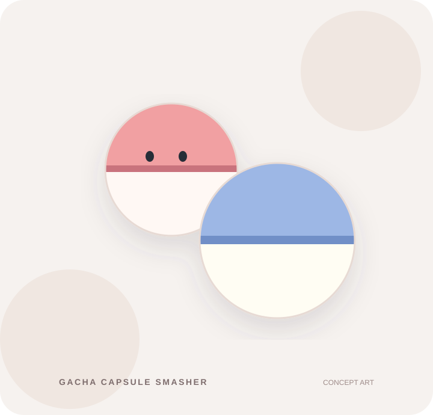

PC · ACTION / HIDYGAMES
Gacha Capsule Smasher
캡슐을 부수고 코인을 모으는 액션 게임. 새로운 장비와 업그레이드로 다음 라운드를 준비합니다.

SMASH / EARN / UPGRADE
캡슐을 깨고,
다음 라운드로.
※ 이미지는 게임 콘셉트 그래픽이며 실제 플레이 화면이 아닙니다.
PC대상 플랫폼
1플레이어
∞반복 플레이
01 / HOW IT PLAYS
게임의 특징
01 / SMASH
캡슐을 부수기
장비를 활용해 캡슐을 공격하고 보상을 획득합니다.
02 / UPGRADE
장비 업그레이드
획득한 자원으로 무기와 성장 요소를 강화합니다.
03 / PREPARE
다음 라운드 준비
상점과 고지서를 고려하며 다음 플레이를 계획합니다.
02 / MODES & SYSTEMS
플레이 방식
라운드 플레이
각 라운드에서 재화를 모으고 강화하며 앞으로 진행합니다.
성장과 선택
무기와 악세사리, 다양한 보상으로 플레이 방식을 바꿉니다.
출시 및 다운로드 정보
현재 개발 중입니다. 공식 스토어 주소가 확인되면 이곳에 연결하겠습니다. 게임 내용은 개발 과정에서 변경될 수 있습니다.